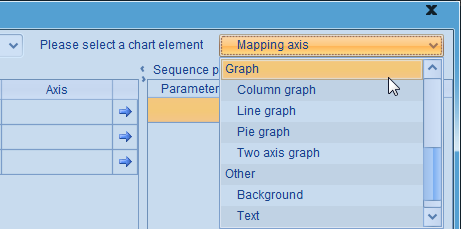

So far the documents on esProc charts have covered how to draw charts through plotting chart elements. Besides the user-defined plotting algorithms, esPorc alos provides a number of built-in ready-made graphs for plotting common styles of charts quickly.
There are four types of ready-made graphs (Column graph, Line graph, Pie graph, Dual-axis graph) available for use in writing plotting algorithms in esProc cellsets, in addition to chart elements like axes, graphs, and so on.

Now let’s see how to use these graphing short cuts and their plotting effects.